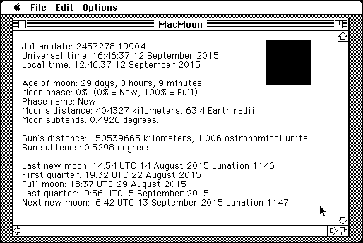

Download
moon.zip (934K) MacMoon 3.0 repackaged into a zipped hfs disk image and checksum file. The disk image can be mounted with Mini vMac.
moon.sit (983K) MacMoon 3.0 in the original format.
copyright: Ben Mesander
mod date: Feb 4, 2000
license: GPL
last known url
(gone)
"Display information about the moon", such as current phase. For System "6.0.8 through 9.0" Appears to be another Macintosh port of the same code as Moon Tool - less polished, but source code is included. Another advantage is that it can compute for other times besides the present.

If you find these downloads useful, please consider helping the Gryphel Project, which hosts them.
Here are the md5 checksums for the downloads, signed with Gryphel Key 5:
--------- GRY SIGNED TEXT --------- b7e8c1e3817fa9e8be6544612b37ab39 moon.zip d386d657d65bd949b8f3a0f49d425744 moon.sit ------- BEGIN GRY SIGNATURE ------- Gry/4Xa8CFcUzxdN/DOkgfMZE9pHS6rV4dt6JYpTKstPyyLzF0QJJwxiDh1mKPMW cP5S16BAZu0giph57pn6rHKxXFVquxDriWeIknCdD4Tugw30yB8KQ+6dyMsFXw3/ 6aWzwR368PdV9JBcX8iXB5QJEPClcWMQlw+PQ7yNgIRVzKPlJWXoEoQJV3pqH2UQ -------- END GRY SIGNATURE --------